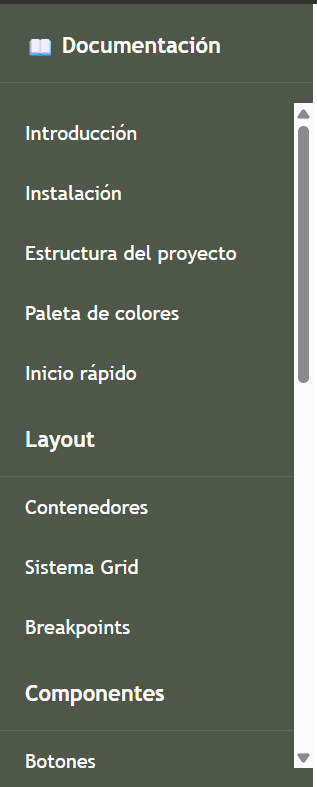

Sidebar
Panel lateral fijo con soporte para toggle en móvil y overlay.
Generado en 11 variantes de color mediante
@each sobre $theme-colors.
¿Cómo funciona?
El sidebar siempre usa dos clases juntas:
.sidebar-main define la estructura base
(posicionamiento, ancho 250px, scroll) y
.sidebar-{color} aplica el color de fondo, texto y
estados de los enlaces.
En móvil el sidebar se oculta con
transform: translateX(-100%) y el botón
.sidebar-toggle-btn lo abre añadiendo
.is-open vía JavaScript. Un
.sidebar-overlay cubre el contenido de fondo mientras
está abierto.
position: fixed en todos los tamaños
de pantalla. El .main-content tiene un
margin-left: 250px automático desde el breakpoint
md para compensarlo.
Elementos del sidebar
Todos los elementos que componen el sidebar y su función.
| Clase | Elemento | Descripción |
|---|---|---|
.sidebar-main |
<aside> |
Estructura base: posición fixed, ancho 250px, scroll vertical |
.sidebar-{color} |
<aside> |
Variante de color: fondo, texto, hover y estado activo |
.sidebar-header |
<div> |
Encabezado de sección dentro del sidebar |
.sidebar-menu |
<ul> |
Lista de enlaces de navegación |
.active |
<a> |
Resalta el enlace de la página actual |
.sidebar-toggle-btn |
<button> |
Botón que abre el sidebar en móvil, siempre visible en mobile |
.sidebar-overlay |
<div> |
Fondo oscuro semitransparente al abrir el sidebar en móvil |
.main-wrapper |
<div> |
Contenedor flex que agrupa sidebar y contenido principal |
.main-wrapper.has-navbar |
<div> |
Ajusta el margen superior cuando hay navbar fija |
.main-content |
<main> |
Área de contenido. Recibe
margin-left: 250px en md+
|
Estructura HTML
Plantilla completa con todos los elementos necesarios para que el sidebar funcione con navbar y toggle móvil.
<!-- Overlay para móvil -->
<div class="sidebar-overlay" id="sidebarOverlay"></div>
<div class="main-wrapper has-navbar">
<!-- Sidebar -->
<aside class="sidebar-main sidebar-secondary" id="sidebar">
<div class="sidebar-header">📖 Menú</div>
<ul class="sidebar-menu">
<li><a href="#" class="active">Inicio</a></li>
<li><a href="#">Sección 1</a></li>
<li><a href="#">Sección 2</a></li>
</ul>
<div class="sidebar-header">Otro grupo</div>
<ul class="sidebar-menu">
<li><a href="#">Sección 3</a></li>
</ul>
</aside>
<!-- Botón toggle (visible solo en móvil) -->
<button class="sidebar-toggle-btn" id="sidebarToggle">☰</button>
<!-- Contenido principal -->
<main class="main-content">
<div class="container">
<h1>Contenido</h1>
</div>
</main>
</div>id="sidebar" y
id="sidebarOverlay" son requeridos por el
JavaScript del framework para que el toggle y el cierre por
overlay funcionen.
Variantes de color — .sidebar-{color}
Las 11 variantes se generan con @each sobre
$theme-colors. Siempre se combinan con
.sidebar-main.

<aside class="sidebar-main sidebar-primary">...</aside>
<aside class="sidebar-main sidebar-dark">...</aside>
<aside class="sidebar-main sidebar-accent">...</aside>
<!-- disponible para los 11 colores del tema -->Resumen de variantes
Las 11 clases de color disponibles para combinar con
.sidebar-main.
| Color | Clase completa | Token |
|---|---|---|
| primary | .sidebar-main .sidebar-primary |
$primary — #BB8588 |
| secondary | .sidebar-main .sidebar-secondary |
$secondary — #4E5748 |
| success | .sidebar-main .sidebar-success |
$success — #6E8F6B |
| info | .sidebar-main .sidebar-info |
$info — #7FA6A0 |
| warning | .sidebar-main .sidebar-warning |
$warning — #D1A85C |
| danger | .sidebar-main .sidebar-danger |
$danger — #D36B6B |
| alert | .sidebar-main .sidebar-alert |
$alert — #E85C5C |
| light | .sidebar-main .sidebar-light |
$light — #EFEBCE |
| dark | .sidebar-main .sidebar-dark |
$dark — #2F332B |
| accent | .sidebar-main .sidebar-accent |
$accent — #D8A39D |
| muted | .sidebar-main .sidebar-muted |
$muted — #B8B2A0 |